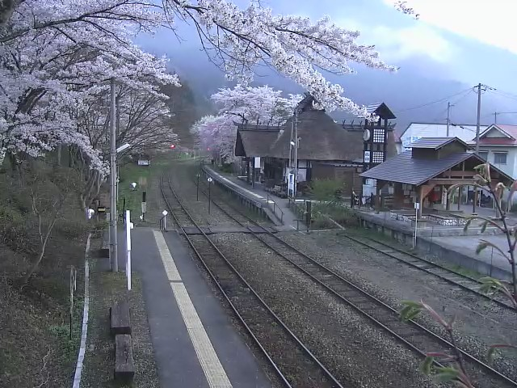
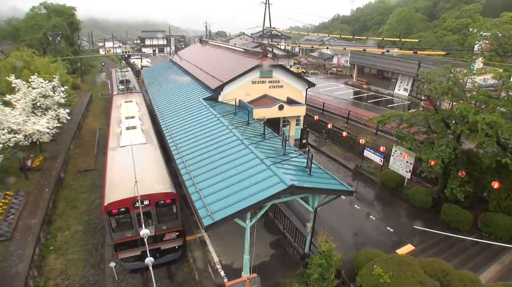

Rest in Peace Aizu-Wakamtsu
湯野上温泉駅 Yunokami-Onsen Station:

http://www.shimogo-live.jp/
rtmpt://114.160.7.45/livepkgr/live-cam003
別所温泉駅 Bessho-Onsen Station:

http://live.ueda.ne.jp/bessyo.html
https://www.youtube.com/watch?v=vYzRrH78JkQ(it changes from time to time)
Old Pastebin: https://pastebin.com/WGqBmfrw